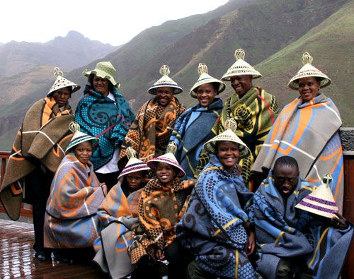
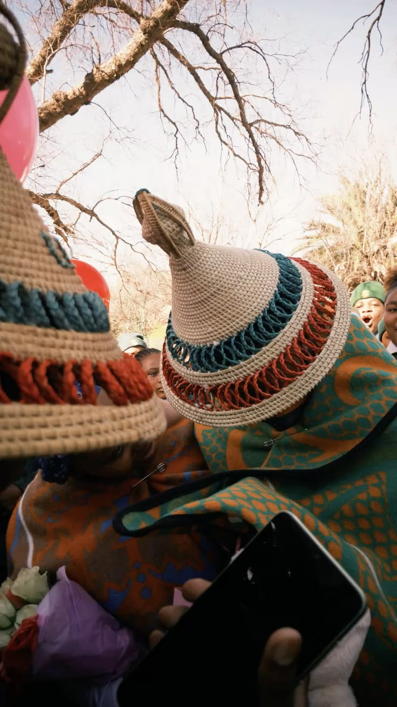
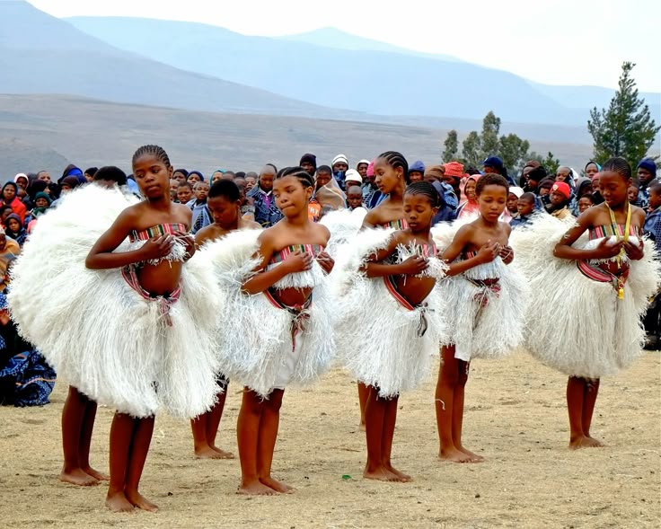
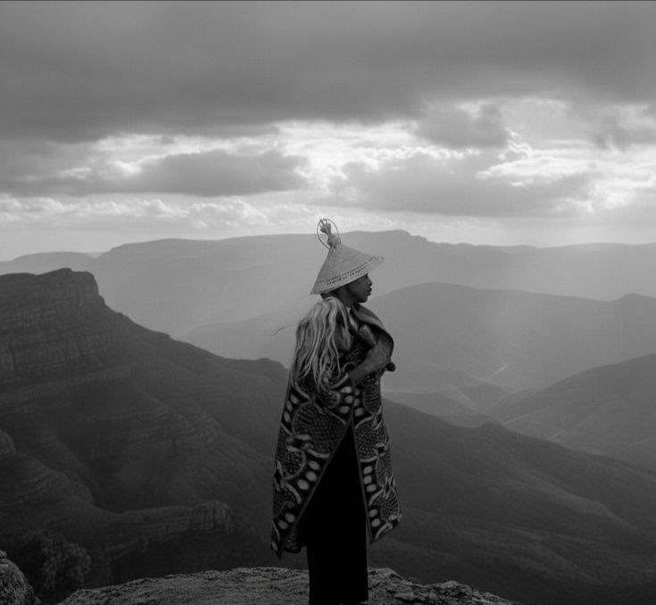
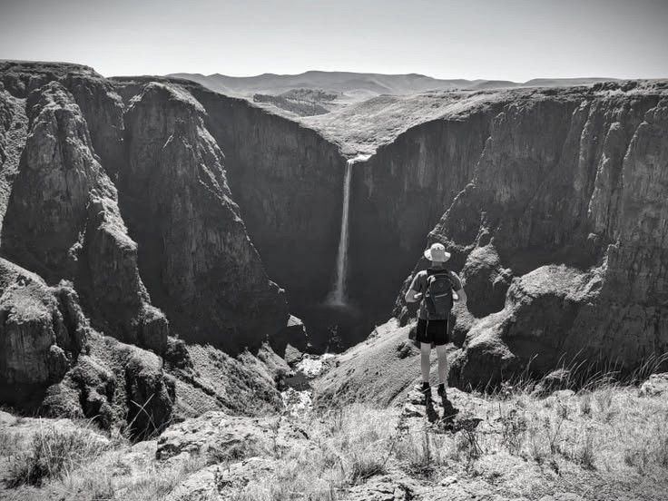

Lesotho Tourism
Lesotho Tourism
Lesotho is a beautiful country located in Southern Africa. It is completely surrounded by South Africa. The capital city is Maseru.
Lesotho is famous for its beautiful mountains, traditional culture, fresh air and friendly people. It is known as the Kingdom in the Sky because of its high altitude.
The official languages are Sesotho and English. Lesotho offers visitors a unique experience of nature, history and culture.
Discover the rich culture and beautiful traditions of the Basotho people.

The Basotho blanket is an important part of traditional clothing and represents Basotho identity and heritage.

The Mokorotlo is a traditional Basotho hat. It is inspired by the shape of Qiloane Mountain and is a national symbol of Lesotho.

Traditional dances and songs are used during celebrations and cultural events to express Basotho heritage.
Experience exciting activities and adventures in the beautiful Kingdom of Lesotho.

Explore the beautiful mountains and villages while riding the famous Basotho ponies.

Enjoy hiking through beautiful mountains and discover amazing natural scenery.

Enjoy skiing and snow activities at Afriski Mountain Resort during winter.

Experience outdoor life while enjoying the peaceful environment of Lesotho.